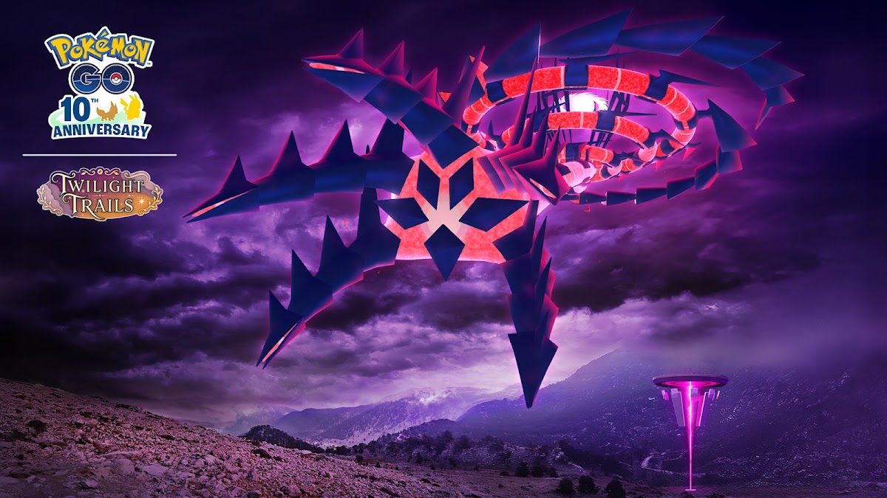
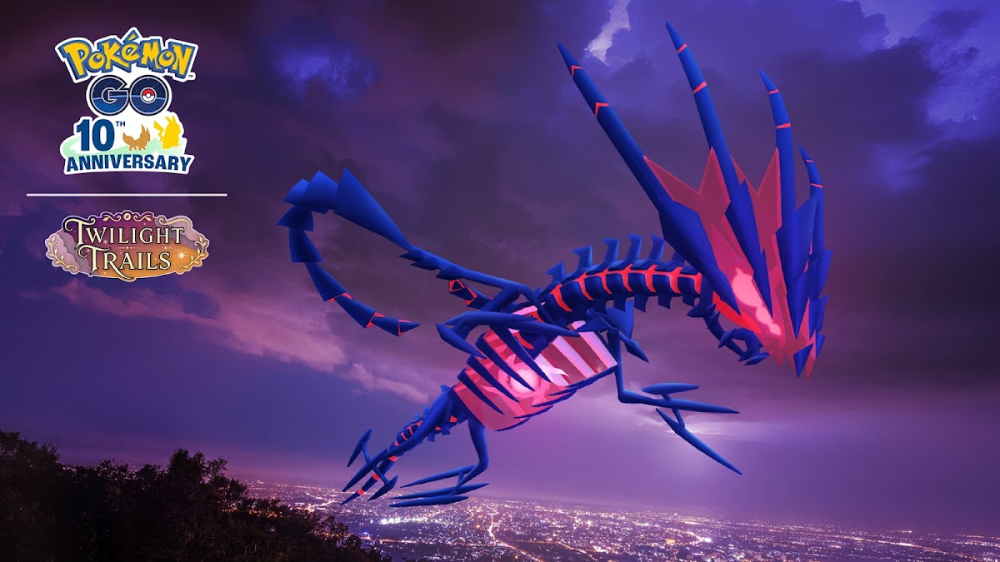

포켓몬고 스페셜 배경 맥스배틀 받는 법, 커다란 발자국 11월 23일까지
포켓몬고 커다란 발자국 이벤트 기간에 맥스배틀에서 포켓몬을 잡는 데 성공하면 스페셜 배경을 받을 기회가 주어집니다. 이벤트는 한국시간 11월 16일(월) 10시에 시작해 11월 23일(월) 20시에 끝나는데요, 시작이 바로 내일이라 어떤 포켓몬이 나오는지, 기념 배경은 어디에 표시되는지까지 미리 짚어 보겠습니다.

구름 낀 보라색 하늘에 거대한 무한다이맥스가 떠 있고, 오른쪽 아래 언덕에는 파워스폿이 보입니다.
출처: Pokémon GO 공식 · 커다란 발자국 공지
포켓몬고 스페셜 배경 맥스배틀 받는 법
스페셜 배경은 이벤트 기간에만 열려 있는 기념 보상인데요, 기간과 조건부터 표로 먼저 정리해 보겠습니다.
| 구분 | 내용 |
|---|---|
| 이벤트 이름 | 커다란 발자국 |
| 기간(한국시간) | 11월 16일(월) 10:00 ~ 11월 23일(월) 20:00 |
| 조건 | 맥스배틀 도전 후 포켓몬 포획 성공 |
| 혜택 | 스페셜 배경을 받을 수 있는 기회 |
표 출처: Pokémon GO 공식 뉴스 «커다란 발자국»
이벤트가 열리면 맥스배틀부터 열어 보시는 게 가장 빠르겠습니다.
맥스배틀 등장 포켓몬과 기념 배경 날짜
이번 이벤트의 맥스배틀에는 지금까지 Pokémon GO에 등장했던 모든 다이맥스 포켓몬이 나올 수 있고, 전설의 포켓몬과 환상의 포켓몬만 예외입니다. 그동안 만났던 다이맥스 포켓몬들이 돌아오는 셈이라 이번 이벤트는 맥스배틀의 폭이 넓은 편입니다.
- 맥스배틀에는 전설·환상을 뺀 모든 다이맥스 포켓몬이 등장할 수 있습니다.
- 야생에는 다이맥스 맥스배틀에 나왔던 포켓몬 등 이벤트 테마 포켓몬이 나타납니다(전설·환상 제외).
- 필드리서치는 이벤트 테마 과제를 마치면 별의모래와 무한다이노의 사탕 등을 받습니다.
- 무한다이노는 GO패스: 커다란 발자국에서 별도로 만납니다.
스페셜 배경이 붙은 포켓몬은 포켓몬 요약 페이지에 이 기념 배경이 표시되고, 그 배경이 포켓몬을 잡은 날짜를 알려 준다고 합니다. 저는 배경이 붙은 포켓몬은 언제 잡았는지 바로 알 수 있다는 점이 제일 반갑네요. 같은 포켓몬이라도 이번 이벤트에서 만난 아이를 한눈에 가려낼 수 있으니까요.
스페셜 배경이 붙은 포켓몬의 요약 페이지 화면입니다.
저는 스페셜 배경이 붙은 요약 페이지에서 〔잡은 날짜부터 / 포켓몬 모습부터 / 배경 그림부터〕 확인해 볼 것 같아요.
맥스 파티클·파워스폿 보너스
이벤트 기간에 붙는 보너스를 적용 시간과 함께 표로 모았습니다.
| 보너스 | 적용 시간 | 내용 |
|---|---|---|
| 파워스폿 추가 등장 | 이벤트 기간 내내 | 추가 등장 |
| 맥스 파티클 수령 | 이벤트 기간 내내 | 야생에서, 또는 맥스배틀 후 이벤트 테마 포켓몬을 잡을 때 받을 수도 있음 |
| 스포트라이트 아워 | 11월 19일(목) 18:00부터 19:00까지 | 포켓몬의 사탕 2배 |
| 일일 리모트 레이드배틀 상한 | 11월 21일(토) 06:00 ~ 11월 22일 11:00 | 10회에서 30회로 증가(맥스배틀과는 별개인 레이드 상한) |
표 출처: Pokémon GO 공식 뉴스 «커다란 발자국» · 시각은 모두 한국시간
맥스 파티클은 이벤트 기간 내내 받을 수 있는데요, 다만 외출캐처나 Pokémon GO Plus +로 잡은 포켓몬은 파티클을 받을 수 없으니 모을 생각이시라면 이 두 가지로 잡는 것은 빼고 계산하셔야 합니다. 스포트라이트 아워는 11월 19일 저녁 한 시간뿐인데요, 이 시간에 나오는 포켓몬은 운이 따라 주면 평소와 다른 색으로 만나게 될 수도 있다고 합니다. 평일 퇴근 후 시간과 겹치는 분들이 많을 텐데, 사탕 2배 보너스가 붙으니 맥스배틀과 같이 노려볼 만합니다.
무한다이노 귀환과 GO패스 스페셜 배경
11월 21일(토) 11:00부터 14:00까지는 무한다이노가 돌아와서 대다수의 파워스폿을 점령합니다. 이 시간에는 파워스폿 갱신 간격 단축, 맥스 파티클 수집 상한 2,400개, 파워스폿 맥스 파티클 8배 보너스도 함께 붙습니다.

도시 야경 위를 날아가는 무한다이노의 모습입니다.
출처: Pokémon GO 공식 · 커다란 발자국 공지
독타입, 드래곤타입 전설의 포켓몬인 무한다이노는 GO패스: 커다란 발자국에서 맥스배틀을 진행하며 만날 수 있는데요, 이벤트 동안 단 한 번만 잡을 수 있고 이미 1마리를 잡은 트레이너는 이번 이벤트에서 추가로 1마리를 더 잡을 수 없습니다. 맥스배틀에서 무한다이노(무한다이맥스)를 쓰러뜨려도 포획 기회는 주어지지 않지만, 무한다이노의 사탕과 사탕XL을 넉넉히 받을 수 있습니다.
GO패스는 스페셜 배경이 있는 포켓몬을 만나는 또 다른 길이기도 합니다. 맥스배틀 말고도 패스 리워드로 이벤트 테마 포켓몬을 만날 수 있다는 뜻이라, 랭크를 올릴 시간이 있는 분들께는 쏠쏠한 보너스가 될 듯합니다.
- GO패스: 커다란 발자국은 한국시간 11월 16일(월) 10시에 자동으로 지급됩니다.
- 무료 리워드에는 스페셜 배경이 있는 이벤트 테마 다이맥스 포켓몬과의 만남이 들어 있습니다.
- GO패스 디럭스로 업그레이드하면 스페셜 배경이 있는 다양한 이벤트 테마 포켓몬을 추가로 만납니다.
- GO 포인트를 모아 랭크를 올릴 수 있는 기한은 11월 23일(월) 20시까지입니다.
- 티어 보너스는 랭크 15부터 포켓몬을 잡을 때 별의모래가 2배로 늘고, 랭크 35부터는 다이맥스포에 필요한 사탕과 별의모래가 절반으로 줄어듭니다. 랭크 55부터는 맥스배틀에서 포켓몬의 사탕과 사탕XL을 추가로 얻습니다.
- 리워드는 11월 25일(수) 20시에 만료됩니다.
GO패스: 와일드 위크에서 랭크 1 리워드를 받으셨다면 11월 14일 10시부터 커다란 발자국 패스를 미리 쓰실 수 있고, GO패스 디럭스로도 무료 업그레이드됩니다. 리워드 만료가 이벤트 종료보다 이틀 늦다는 점도 참고해 두시면 좋겠습니다.
자주 묻는 질문
Q. 이미 무한다이노를 잡았다면 GO패스에서는 무엇을 받나요?
무료 GO패스 리워드에 무한다이노와의 만남이 있는데, 이미 잡으셨다면 만남 대신 무한다이노의 사탕 100개를 받습니다.
Q. GO패스 디럭스는 얼마인가요?
$4.99이고, 이 가격은 USD 또는 동일한 가치의 현지 통화입니다. 이용 가능 여부는 지역에 따라 다를 수 있습니다. Web Store에서 구매하면 하이퍼볼 10개, 기력의덩어리 5개, 프리미엄 배틀패스 1개, 풀회복약 5개가 구매 특전으로 함께 제공됩니다.
커다란 발자국 스페셜 배경 챙기기
이벤트가 월요일 20:00에 끝나다 보니 평일이 빠듯한 분들은 주말에 시간을 내서 맥스배틀에 여러 번 도전해 보시길 권해 드립니다. 토요일 11:00부터 14:00까지는 무한다이노가 대다수의 파워스폿을 점령한다는 점도 기억해 두시면 좋겠습니다. 마음에 드는 배경 하나쯤은 꼭 만나시길 바랄게요.
✔ 포켓몬 GO 같이 보기 좋은 내용
· 포켓몬고 픽시 슈퍼 메가 레이드 데이 11/28, 슈퍼 맥스와 챌린지 보너스
· 포켓몬고 블랙프라이데이 포켓코인 2배 윈터스페셜박스 11월 28일까지
· 포켓몬고 얻는법 와일드 에리어 스페셜리서치 강철·드래곤 메달 2종
참고한 곳 (2026.11.15 기준)
· Pokémon GO 공식 뉴스 · 커다란 발자국